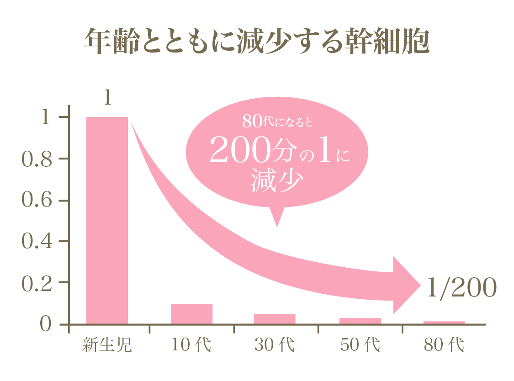
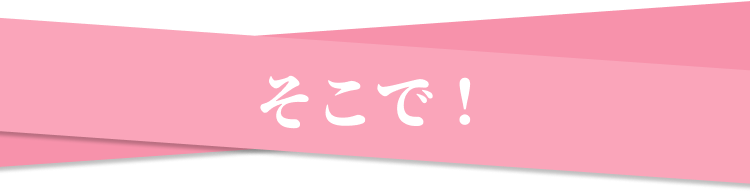
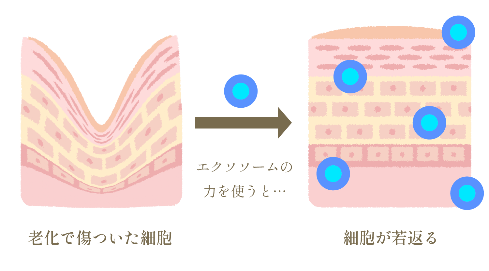
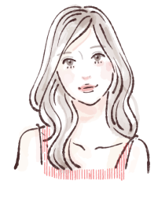

からお申し込みの方限定
とってもお得な定期コース
通常価格 39,800円(税込)
29,800円
(税込)
内容量：4ml、30日分
単品のご購入はこちら
32,000円(税込)
こんなお悩みありませんか？
Check list
もっと綺麗になりたい
免疫力を向上させたい
白髪の数が増えてきた
肌のしわやたるみが気になる
疲労感がずっと残っている
実はそれ
幹細胞の減少が
原因かもしれません
原因かもしれません
「幹細胞」が減少すると
うるおい成分をつくる表皮細胞（角化細胞）と
コラーゲンをつくる真皮細胞(線維芽細胞)の
うるおい成分をつくる表皮細胞（角化細胞）と
コラーゲンをつくる真皮細胞(線維芽細胞)の
再生が遅くなり肌が衰えてしまいます。


そんなお悩みを解決できる
最先端の再生医療
エクソソームとは？
(幹細胞培養上清液)
幹細胞培養上清液に含まれる、
細胞の修復や活性化を促進する
細胞間情報伝達分子です。
エクソソームの注入によって、
肌のターンオーバー(再生と修復)を促進し
細胞の修復や活性化を促進する
細胞間情報伝達分子です。
エクソソームの注入によって、
肌のターンオーバー(再生と修復)を促進し
肌の弾力性やハリの向上
しわの改善
乾燥肌の改善
色素沈着の軽減
しわの改善
乾燥肌の改善
色素沈着の軽減
など、細胞レベルでの若返り効果
(リバースエイジング)が期待できます。
(リバースエイジング)が期待できます。

Point
01
希少なへその緒由来
国内流通の約1％
ウォートンジェーリー
エクソソーム使用
ウォートンジェーリー
エクソソーム使用
当院で取り扱っているエクソソーム(幹細胞培養上清液)は
ウォートンジェリーエクソソーム
と呼ばれ、希少部位である赤ちゃんのへその緒から
採取されます。へその緒に存在するゼリー状の組織
から取り出した幹細胞から分泌されたエクソソーム
や成長因子、サイトカインが含まれています。
ウォートンジェリーエクソソーム
と呼ばれ、希少部位である赤ちゃんのへその緒から
採取されます。へその緒に存在するゼリー状の組織
から取り出した幹細胞から分泌されたエクソソーム
や成長因子、サイトカインが含まれています。
肌再生をサポート
Point
02
高濃度な成分が
多数配合
多数配合
成分検査を行った高品質なエクソソームを使
用、肌の再生をサポートするためのコラーゲ
ン生成を促進する因子や、EGF(上皮成長
因子)やHGF(幹細胞増殖因子)といった
成分が配合されており、さらにヒアルロン酸
も含有しているため、肌にうるおいやハリを
与える効果も期待できます。
用、肌の再生をサポートするためのコラーゲ
ン生成を促進する因子や、EGF(上皮成長
因子)やHGF(幹細胞増殖因子)といった
成分が配合されており、さらにヒアルロン酸
も含有しているため、肌にうるおいやハリを
与える効果も期待できます。
Point
03
通院不要
1日たった５秒！
自宅でできる簡単美容
自宅でできる簡単美容
点鼻薬タイプなら毎日気軽に使用できる
ため、エクソソームや成長因子が常に細胞に
働きかけ、必要な指令を送り続けることがで
きます。これにより、従来の方法では得られ
ない持続的な効果が期待できます。
ため、エクソソームや成長因子が常に細胞に
働きかけ、必要な指令を送り続けることがで
きます。これにより、従来の方法では得られ
ない持続的な効果が期待できます。
本気で効果を実感したい方へ
効果を実感するためには、
3ヶ月以上の継続使用が重要です。
3ヶ月以上の継続使用が重要です。
多くの利用者が、
3ヶ月以上続けることで
細胞の若返りを感じています。
ぜひ、続けてお試しください！
3ヶ月以上続けることで
細胞の若返りを感じています。
ぜひ、続けてお試しください！
からお申し込みの方限定
とってもお得な定期コース
通常価格 39,800円(税込)
29,800円
(税込)
内容量：4ml、30日分
単品のご購入はこちら
32,000円(税込)
Users Voice
利用された方の声
肌質改善の
効果をとても
感じました！
効果をとても
感じました！
40代女性
1ヶ月ほど使用をしているといつのま
にかお肌の悩みが減っていることに
気がつきました！肌質改善の効果を
とても感じました！
にかお肌の悩みが減っていることに
気がつきました！肌質改善の効果を
とても感じました！

アレルギー
症状が楽に！
症状が楽に！
30代女性
点鼻薬を使用してから、アレルギー症
状が楽になりました。くしゃみや鼻水
が減っただけでなく、お肌の荒れも軽
減しました。
状が楽になりました。くしゃみや鼻水
が減っただけでなく、お肌の荒れも軽
減しました。
睡眠不足
解消！
解消！
40代女性
点鼻薬を使用すると、普段なかなか寝
付けなかったのに、その日からぐっす
りと眠れて、結果的に眠れていなかっ
た頃よりもぐんとお肌の調子が良くな
りました！
付けなかったのに、その日からぐっす
りと眠れて、結果的に眠れていなかっ
た頃よりもぐんとお肌の調子が良くな
りました！
How To Use
点美液の使用方法
Step 1
Step 2
Step 3
Q and A
Q.毎回通院する必要はありますか？
A.通院不要です。
Q.癌になるって聞いたことあるんですけど
A.癌を新規で発生させることはありません。
ただ、今もし癌細胞があれば、
成長する方向に効果が出る可能性はあります。
ただ、今もし癌細胞があれば、
成長する方向に効果が出る可能性はあります。
Q.自分に合うか不安です。
A.医師に相談可能です。
ご希望の場合は下記よりLINE友達登録を行い
「エクソソーム点鼻診察希望」とご入力ください
ご希望の場合は下記よりLINE友達登録を行い
「エクソソーム点鼻診察希望」とご入力ください
Q.どのくらいで効果がでますか？
A.個人差はありますが、ほとんどの方が、約3ヶ
月後には効果を実感していただいておりま
す。
月後には効果を実感していただいておりま
す。
トラストメディ東梅田クリニック
〒530-0047
大阪市北区西天満6丁目1番12号
エル・ミズホビル502号室
大阪市北区西天満6丁目1番12号
エル・ミズホビル502号室
| 診療時間 | 月 | 火 | 水 | 木 | 金 | 土 | 日 |
|---|---|---|---|---|---|---|---|
| 12:00 ~ 18:00 | / | / | / | / | / | ◯ | / |
| 13:00 ~ 20:00 | ◯ | ◯ | / | ◯ | ◯ | / | / |
特定商取引法に基づく表示
© 2025 トラストメディ東梅田クリニック